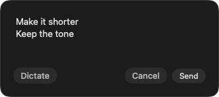

Quick Actions
Rewrite what’s already there.
Select text and press your shortcut. Choose Fix or Shorten, or give your own instruction by voice or keyboard.
Review the draft and refine it. Copy it, replace an editable selection, or save it as a note or todo.
Quick Actions use the AI connection you choose.
